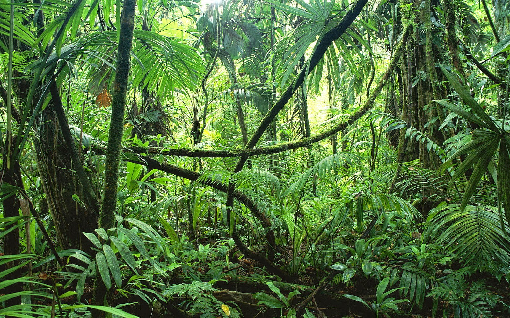

The jungle, with its lush canopy of emerald green, is a realm of unparalleled beauty and intrigue. Teeming with life in every corner, from the towering trees that reach towards the sky to the myriad of creatures that call it home, the jungle captivates with its abundance and diversity. Each step into this verdant wilderness reveals a new wonder: vibrant birds flitting amongst the branches, elusive big cats prowling through the undergrowth, and ancient trees adorned with exotic blooms. But beyond its breathtaking beauty, the jungle holds a unique allure, a sense of mystery and adventure that beckons explorers to delve deeper into its depths. Here, amidst the symphony of chirping insects and cascading waterfalls, one can't help but marvel at the sheer resilience and complexity of this intricate ecosystem. Truly, the jungle is a testament to the wonders of nature, a living masterpiece waiting to be discovered